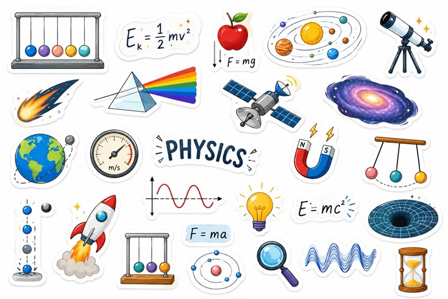

វិទ្យាសាស្ត្រនិងបច្ចេកវិទ្យា
គឺជាក្បាលម៉ាស៊ីនដ៏មានឥទ្ធិពលបំផុតក្នុងការរុញច្រានការអភិវឌ្ឍសង្គម-សេដ្ឋកិច្ចរបស់មនុស្សជាតិនៅទូទាំងសកលលោក ព្រមទាំងនៅក្នុងប្រទេសកម្ពុជាផងដែរ។

គឺជាក្បាលម៉ាស៊ីនដ៏មានឥទ្ធិពលបំផុតក្នុងការរុញច្រានការអភិវឌ្ឍសង្គម-សេដ្ឋកិច្ចរបស់មនុស្សជាតិនៅទូទាំងសកលលោក ព្រមទាំងនៅក្នុងប្រទេសកម្ពុជាផងដែរ។
ជ្រើសរើសប្រភេទជំនាញ ឬប្រើប្រាស់ប្រព័ន្ធតម្រងខាងក្រោមដើម្បីស្វែងរកជំនាញដែលអ្នកចាប់អារម្មណ៍
សិក្សាអំពីការសរសេរកូដ បង្កើតកម្មវិធី កុំព្យូទ័រ និងការវិភាគទិន្នន័យ ដើម្បីឆ្លើយតបនឹងយុគសម័យឌីជីថល។

ជាវិទ្យាសាស្ត្រធម្មជាតិដែលសិក្សាអំពីរូបធាតុ អង្គធាតុផ្សំមូលដ្ឋានរបស់វា ចលនា និងឥរិយាបថរបស់វាតាមលំហនិងកាល ព្រមទាំងថាមពលនិងកម្លាំង ។
ជាវិទ្យាសាស្ត្រធម្មជាតិមួយដែលសិក្សាអំពីធាតុផ្សំ រចនាសម្ព័ន្ធ លក្ខណៈ និងប្រែ (ប្រតិកម្មគីមី) របស់រូបធាតុ ក៏ដូចជាថាមពលដែលទាក់ទងនឹងការប្រែប្រួលទាំងនោះ

ជាវិទ្យាសាស្ត្រធម្មជាតិដែលសិក្សាអំពីជីវិត និងសារពាង្គកាយមានជីវិត រួមមាន រចនាសម្ព័ន្ធ មុខងារ ការលូតលាស់ ដើមកំណើត ការវិវត្ត និងការបែងចែករបស់ពួកវា。ពាក្យនេះមកពីភាសាក្រិកគឺ Bios (ជីវិត) និង Logia (ការសិក្សា)

គឺជាវិស័យវិទ្យាសាស្ត្រដ៏ទូលំទូលាយមួយ ដែលសិក្សាអំពីភពផែនដីរបស់យើង ប្រព័ន្ធព្រះអាទិត្យ និងចក្រវាឡទាំងមូល។
ការគណនា ទិន្នន័យ និងទ្រឹស្ដីលេខ។

សិក្សាអំពីទ្រឹស្ដីនៃការគណនា អាល់ហ្គោរីធឹម (Algorithms) និងការសរសេរកូដ (Programming)។

ការគណនា ទិន្នន័យ និងទ្រឹស្ដីលេខ។

វិស្វកម្ម និងបច្ចេកវិទ្យាឧស្សាហកម្ម គឺជាវិស័យដ៏សំខាន់មួយក្នុងការអភិវឌ្ឍសេដ្ឋកិច្ច ការកាត់បន្ថយពេលវេលា និងការបង្កើនប្រសិទ្ធភាពនៃចង្វាក់ផលិតកម្មនៅកម្ពុជា។